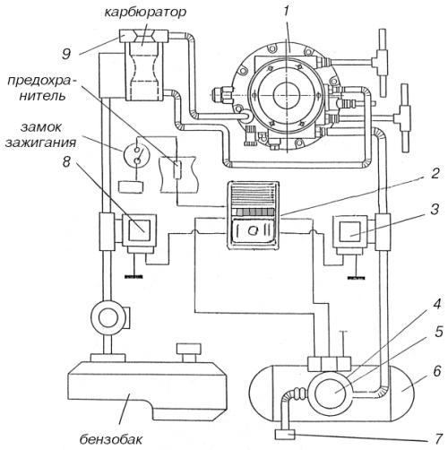

Газобаллонное оборудование «САГА-6»
Рассмотрим вариант газовой аппаратуры «САГА-6» для работы на автомобиле с карбюраторным двигателем.
В комплект газовой аппаратуры «САГА-6» входят редуктор-испаритель (1) (рис. 25) и электромагнитные клапаны отключения газа (3) и бензина (8), отличающиеся от аналогичных элементов других систем повышенной надежностью, меньшим значением тока и напряжения срабатывания. Фильтры клапанов рассчитаны на длительный срок эксплуатации без какого-либо обслуживания или замены.

Рис. 25. Схема соединения газовой аппаратуры «САГА-6»: 1 – редуктор-испаритель; 2 – переключатель вида топлива и указатель уровня газа в баллоне; 3 – газовый электромагнитный клапан; 4 – газонепроницаемый кожух; 5 – блок запорно-предохранительной арматуры; 6 – газовый баллон; 7 – выносная заправочная горловина; 8 – бензиновый электромагнитный клапан; 9 – газосмесительное устройство.
Трехпозиционным переключателем (2) (газ – нейтральное положение – бензин) при включенном зажигании выбирают необходимый вид топлива. Обычно переключатель встраивают в панель приборов автомобиля. Переключатель снабжен индикатором, который двумя светодиодами показывает выбранный вид топлива, а пятью светодиодами – уровень газа в баллоне. По мере расходования газа светодиоды по порядку, один за другим гаснут. Таким образом, водитель всегда может определить количество газа в баллоне.
Газовый баллон (6) с установленным на нем блоком запорно-предохранительной арматуры (5) закрыт герметичным кожухом (4), который надежно изолирует оборудование от внутреннего объема автомобиля. В состав блока запорно-предохранительной арматуры входит мультиклапан – ограничительный механизм, который отсекает подачу газа при заполнении баллона на 80 % от общего объема. Один из расходно-наполнительных вентилей всегда находится в открытом положении. Заполняют баллон, не открывая крышку багажного отделения, через выносную заправочную горловину (7), обеспечивающую ускоренную (за 2–3 мин) заправку газом. Вентиль для соединения паровой фазы газа в баллоне с атмосферой позволяет заполнить баллон на 80 % даже при отсутствии компрессора на заправочной станции.
Смесительное устройство (9) (в обиходе просто смеситель) устанавливают над карбюратором в полости воздушного фильтра или между карбюратором и впускным трубопроводом. Смеситель вместе с редуктором-испарителем 1 формируют оптимальный состав газовоздушной смеси. Форма и размеры смесителя подобраны так, чтобы он не влиял на показатели двигателя при его работе на бензине. Для разных марок карбюраторов и двигателей разработаны соответствующие модели смесителей.
В комплект оборудования входят также газопроводы, выполненные из нержавеющей стали, шланги из специальной резины и крепежные детали.
Система «САГА-6» исключает попадание газа в салон автомобиля. Для этой цели конструкторы заменили традиционные резиновые кольца латунными, обеспечивающими герметичность на весь эксплуатационный период. В системе применены усовершенствованные диафрагмы редуктора-испарителя, разработанные и произведенные совместно с фирмой EFFBE (Франция). Трубки газовой магистрали выполнены из нержавеющей стали с заводской развальцовкой. Соединительные элементы газовой магистрали выполнены по авиационной технологии. Предусмотрено надежное разгрузочное устройство с вакуумным управлением для предотвращения выхода газа в подкапотное пространство после остановки двигателя. При повреждении диафрагмы первой ступени редуктора-испарителя газ также не поступает в подкапотное пространство. И, наконец, исключено попадание газа в систему охлаждения двигателя.
По конструкции аппаратура «САГА-6» не повторяет ни одну из существующих зарубежных или отечественных систем. Она прошла испытание временем и завоевала признание.
Для автомобилей, оборудованных системами впрыска топлива, созданы разнообразные газосмесительные устройства, облегчающие их индивидуальный подбор для любой модели двигателя отечественного и иностранного производства.
Сочетание редуктора «САГА-6» и специально подобранного смесителя (трубка Вентури) обеспечивает подачу газовоздушной смеси, состав которой близок к оптимальному на всех режимах работы двигателя.
«САГА-6» легко поддается электронной коррекции и может работать с учетом сигналов лямбда-зонда при установке на автомобиль каталитического нейтрализатора отработавших газов. При использовании системы «САГА» выбросы вредных веществ соответствуют не только требованиям Евро-2, но и перспективным нормам Евро-3.
Фирма «САГА» и ПО «Инкар» разработали комплектующие изделия и инструкцию по дооборудованию автомобильной газовой системы «САГА-6» для применения на автомобилях с впрысковыми двигателями, в которой указаны порядок и способы выполнения операций по демонтажно-монтажным и регулировочным работам при установке ГБО на конкретные автомобили.
Дооборудование автомобилей газовой топливной системой и получение российских сертификатов соответствия ГБО конкретным автомобилям следует проводить в соответствии с техническими условиями, установленными Министерством транспорта РФ-ТУ 152-12-008-99 «Переоборудование грузовых, легковых автомобилей и автобусов в газобаллонные для работы на сжиженных нефтяных газах. Приемка на переоборудование и выпуск после переоборудования. Испытание газобаллонных систем». Работы по переоборудованию следует выполнять только в специализированных мастерских.